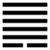

Thiên Phong Cấu (姤 gòu)
Thoán từ:
姤: 女壯, 勿用取女．
Cấu: Nữ tráng, vật dụng thú nữ.
Dịch: Gặp gỡ: Con gái cường tráng, đừng cưới nó (cũng có nghĩa là tiểu nhân đương lúc rất mạnh, đừng thân với nó).
Giảng: Trời (Càn) ở trên, gió (Tốn) ở dưới, gió đi dưới trời, tất đụng chạm vạn vật, cho nên gọi là Cấu (gặp gỡ).
Quẻ này một hào âm mới sinh ở dưới (thuộc về tháng 5), đụng với 5 hào dương ở trên, cũng như một người con gái rất cường tráng, đụng với (Cấn) năm người con trái, chống được với 5 người còn trai, hào đó lại bất đắc chính (âm ở vị dương), như người con gái bất trinh, không nên cưới nó.
Thoán truyện đưa thêm một nghĩa khác, trái hẳn, tương truyền là của Khổng tử; một hào âm xuất hiện ở dưới năm hào dương, là âm dương bắt đầu hội ngộ (gặp nhau: cấu), vạn vật nhờ đó sinh trưởng, các phẩm vật đều rực rỡ. Tốt. Lại thêm hào 5 dương cương, trung chính, thế là đạo quân tử được thi hành khắp thiên hạ (cương ngộ trung chính, thiên hạ đại hành dã). Cho nên ý nghĩa chữ “Cấu” này thật lớn lao. Đại tượng truyện chỉ coi tượng quẻ, không để ý tới nghĩa gặp gỡ của quẻ, mà đưa ra lời khuyên người quân tử nên thi hành mệnh lệnh, báo cáo, hiểu dụ khắp bốn phương, như gió thổi vào khắp vạn vật ở dưới trời.
Ý nghĩa các hào :
1.
初六: 繫于金柅, 貞吉．有攸往見凶．羸豕孚蹢躅．
Sơ lục: Hệ vu Kim nê, trinh cát; hữu du vãng kiến hung. Luy thỉ phu trịch trục.
Dịch: Hào 1, âm: chặn nó lại bằng cái hãm xe bằng kim khí, thì đạo chính mới tốt; nếu để cho nó (hào 1) tiến lên thì xấu. Con heo ấy tuy gầy yếu, nhưng quyết chắc có ngày nó sẽ nhảy nhót lung tung.
Giảng: Hào âm (tiểu nhân) này mới xuất hiện, phải chặn ngay nó mới được, đừng cho nó tiến lên thì đạo chính của người quân tử mới tốt; nếu để nó tiến lên thì xấu. Vì bây giờ nó tuy còn non, yếu, nhưng một ngày kia nó sẽ mạnh, nhảy nhót lung tung. Đừng nên coi thường nó.
Đó là cách trừ kẻ tiểu nhân mà cũng là cách trừ những tật mới phát sinh.
2.
九二: 包有魚, 无咎．不利賓．
Cửu nhị: Bao hữu ngư, vô cữu; bất lợi tân.
Dịch: Hào 2, dương: nhốt con cá (hào 1) vào trong bọc, không có lỗi; nhưng đừng cho nó (hào 1) gặp khách.
Giảng: Hào 2 này tuy ở sát hào 1, nhưng có đức dương cương, lại đắc trung, cho nên chế ngự được 1, như nhốt lỏng nó trong cái bao (ví hào 2 với con cá vì cá thuộc âm), như vậy không có tội lỗi.
Nhưng 1 chính ứng với hào 4; 4 muốn làm thân với 1 lắm, nó bất trung bất chính, không có đức như 2, sẽ bị 1 mê hoặc mất, cho nên Hào từ khuyên hào 2 phải ngăn không cho 1 gặp 4 (chữ tân là khách, trỏ hào 4).
3.
九三: 臀无膚, 其行次且, 厲, 无大咎．
Cửu tam: Đồn vô phu, kì hành tư thư, lệ, vô đại cữu.
Dịch: Hào 3, dương: như bàn toạ không có da (ngồi không yên mà đứng dậy) đi thì chập chững, có thể nguy đấy, nhưng không có lỗi lớn.
Giảng: Hào 3 này quá cương (dương ở vị dương), bất trung, muốn có bạn là 1, nhưng hào 2 đã là bạn của 1 rồi; ngó lên trên có hào trên cùng ứng với 3, nhưng cũng là dương như 3, thành thử có vẻ ngồi không an, mà đi thì chập chững, có thể nguy đấy. Nhưng nó đắc chính (dương ở vị dương) nên biết giữ đạo, không mắc lỗi lớn.
4.
九四: 包无魚, 起凶．
Cửu tứ: Bao vô ngư, khởi hung.
Dịch: Hào 4, dương: Trong bọc của mình không có cá, hoạ sẽ phát.
Giảng: Hào này ứng với 1, nhưng bị 2 ngăn không cho gặp (coi lại hào 2), 1 đã như ở trong cái bọc của 2 rồi, cho nên cái bọc của 4 không có gì cả. Sở dĩ vậy cũng do lỗi của 4, bất trung, bất chính, làm mất lòng 1. Người trên mà mất lòng kẻ dưới, thì hoạ sẽ phát.
5.
九五: 以杞包瓜, 含章, 有隕自天．
Cửu ngũ: Dĩ kỉ bao qua, hàm chương, hữu vẫn tự thiên.
Dịch: Hào 5, dương: dùng cây kỉ mà bao che cây dưa, ngậm chứa đức tốt, (sự tốt lành) từ trên trời rớt xuống.
Giảng: Hào này ở địa vị tối cao, dương cương, trung chính, có đức tốt mà không khoe khoang (ngậm chứa đức tốt), bao bọc cho kẻ tiểu nhân ở dưới (hào 1) như cây kỉ, cao, cành lá xum xuê che cây dưa (thuộc loài âm). Như vậy là hợp đạo trời, sẽ được trời ban phúc cho.
6.
上九: 姤其角, 吝, 无咎．
Thượng cửu: Cấu kì giác, lận, vô cữu.
Dịch: Hào trên cùng, dương: gặp bằng cái sừng, đáng hối tiếc, không đổ lỗi cho ai được.
Giảng: Hào này ở trên cùng, thời Cấu (gặp gỡ) cho nên ví với cặp sừng. Gặp nhau mà bằng cặp sừng (đụng nhau bằng sừng) ý nói quá cương – đáng hối tiếc. Mọi sách đều dịch “vô cữu” là không có lỗi mà không giảng tại sau quá cương mà không có lỗi. Riêng Phan Bội Châu hiểu là: không đổ lỗi cho ai được.
*
Quẻ Cấu này khuyên ta:
- Phải chế ngự tiểu nhân (và tật của ta) từ khi nó mới xuất hiện hào 1).
- Muốn chế ngự tiểu nhân thì nên có độ lượng bao dụng có đức trung chính như hào 2, hào 5); nếu quá cương (như hào 3) bất trung bất chính (như hào 4) thì tiểu nhân sẽ không phục mình.